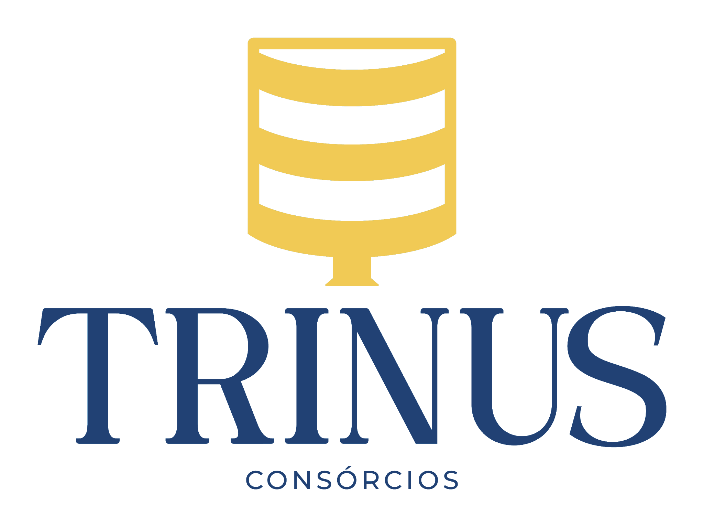

O processo · jun 2026A ordem importa. Cada etapa alimenta a próxima: primeiro a marca, depois a inteligência do que o mercado mostra, daí a estratégia, então a programação, e por fim a execução das peças. Tudo abre no navegador.
A primeira coisa foi destilar a identidade da Trinus: cores reais, tipografia, logos oficiais e um sistema de design completo. É a fundação que dá a cara a tudo que vem depois.
Com a marca de pé, fui buscar sinal de fora: o que concorrentes e referências postam no Instagram (via Apify). Depois cruzei com o conteúdo atual da Trinus para achar a brecha.
Da leitura nasce a editoria. Um território editorial e cinco pilares de conteúdo, a espinha que vale por meses.
Os pilares viram pauta. Quinze dias de conteúdo, cada peça num pilar, num formato e num porquê ligado ao que o radar mostrou.
E aqui o que vira ativo de verdade. Carrossel, motion e cortes de vídeo, todos na identidade da Trinus, prontos para postar e para usar em mídia.
"Comprar à vista nem sempre é a decisão mais inteligente." 7 telas + legenda.
Abrir →"A pergunta certa." Cinética de texto, sem ninguém gravar nada.
▶ Abrir vídeoO mesmo motion, no recorte vertical de stories.
▶ Abrir vídeoReel do método + vídeo "Médico com R$ 500 mil", cena a cena.
Abrir →Corte do vídeo do sócio, editado com a marca e legenda.
▶ Abrir vídeoCorte editado em 9:16, legenda sincronizada com a fala.
▶ Abrir vídeoA tese da Trinus na boca do sócio, com a cara da marca.
▶ Abrir vídeo